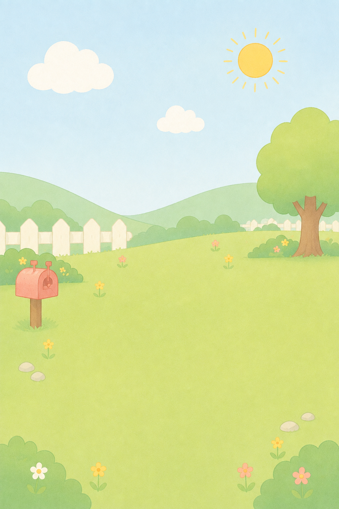

A LITTLE FRIEND
오늘부터 함께 지낼
작은 친구를 만나볼까요?
세 친구 중 마음이 가는 친구를 골라주세요.
A LITTLE FRIEND
아직 서로 모르는 게 많아요.
하루에 하나씩 이야기를 남기며
천천히 알아가보세요.

✦
✦
A LITTLE FRIEND · ADOPTION RECORD
의 입양 기록서
ONE LITTLE ANSWER
오늘 하나만 골라볼까요?
ONE LITTLE ANSWER
지난 조각
일월화수목금토
먹인 조각은 수정할 수 없어요.
A SMALL PRIVATE ROOM
우리
친한 사람과 하루 하나를 나누는 작은 방이에요.
오늘의 함께 질문
함께 있는 방
아직 함께 있는 작은 방이 없어요.
방을 만들거나 초대 코드로 함께해보세요.
우리의 작은 방
오늘의 함께 질문
오늘의 자리
HELLO, LITTLE FRIEND
어떻게 부를까요?
방 안에서 사용할 닉네임이에요.
JOIN A LITTLE ROOM
초대 코드를 입력해주세요.
친구에게 받은 6자리 코드예요.
INVITE A FRIEND
친구 초대하기
이 코드를 친구에게 알려주세요.
A SMALL PREFERENCE
같이 지내기 어려운 친구가 있나요?
조금 더 자주 만나고 싶은 친구
선택하지 않아도 괜찮아요. 최대 3종까지.